Chapitre 4 : Les conditions
-
La condition if... else
Les conditions permettent de tester des variables. On peut par exemple dire « si la variable machin est égale à 50, fais ceci »… Mais ce serait dommage de ne pouvoir tester que l'égalité ! Il faudrait aussi pouvoir tester si la variable est inférieure à 50, inférieure ou égale à 50, supérieure, supérieure ou égale… Ne vous inquiétez pas, le C a tout prévu !
Avant de voir comment on écrit une condition de type if... else en C, il faut donc que vous connaissiez deux ou trois symboles de base. Ces symboles sont indispensables pour réaliser des conditions.
Quelques symboles à connaître
Voici un petit tableau de symboles du langage C à connaître par coeur :
Tableau 1. Les symboles Symbole Signfication == est égal à > est supérieur à < est supérieur ou égal à >= est inférieur à <= est inférieur ou égal à != est different de Un if simple
En anglais, le mot « si » se traduit par if. C'est celui qu'on utilise en langage C pour introduire une condition.
Écrivez donc un if. Ouvrez ensuite des parenthèses : à l'intérieur de ces parenthèses vous devrez écrire votre condition.
Ensuite, ouvrez une accolade { et fermez-la un peu plus loin }. Tout ce qui se trouve à l'intérieur des accolades sera exécuté uniquement si la condition est vérifiée.
Cela nous donne donc à écrire :
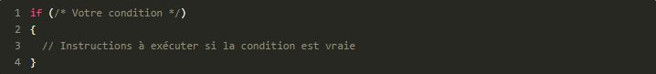À la place de mon commentaire « Votre condition », on va écrire une condition pour tester une variable.
Par exemple, on pourrait tester une variableagequi contient votre âge. Tenez pour s'entraîner, on va tester si vous êtes majeur, c'est-à-dire si votre âge est supérieur ou égal à 18 :
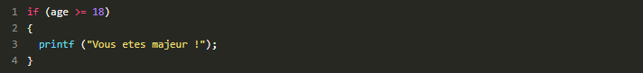Le symbole >= signifie « supérieur ou égal », comme on l'a vu dans le tableau tout à l'heure.
Le else pour dire « sinon »
Maintenant que nous savons faire un test simple, allons un peu plus loin : si le test n'a pas marché (il est faux), on va dire à l'ordinateur d'exécuter d'autres instructions.
Il suffit de rajouter le mot else après l'accolade fermante du if.
Petit exemple :
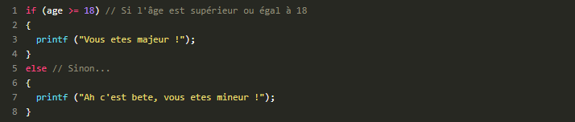Les choses sont assez simples : si la variable age est supérieure ou égale à 18, on affiche le message « Vous êtes majeur ! », sinon on affiche « Vous êtes mineur ».
Le else if pour dire « sinon si »
On a vu comment faire un « si » et un « sinon ». Il est possible aussi de faire un « sinon si » pour faire un autre test si le premier test n'a pas marché. Le « sinon si » se place entre le if et le else.
Petit exemple :
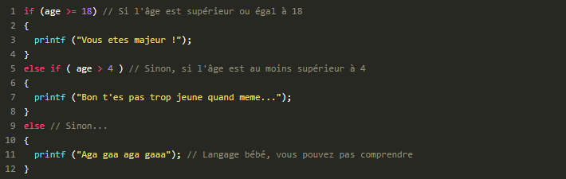
-
Les booléens, le coeur des conditions
Nous allons maintenant entrer plus en détails dans le fonctionnement d'une condition de type if... else.
En effet, les conditions font intervenir quelque chose qu'on appelle les booléens en informatique.
Quelques petits tests pour bien comprendre
Nous allons commencer par faire quelques petites expériences avant d'introduire cette nouvelle notion. Voici un code source très simple que je vous propose de tester :
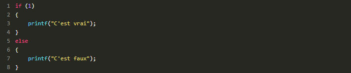Resultat:
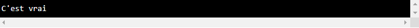Si, ça en a, vous allez comprendre. Faites un autre test en remplaçant 1 par 0 :
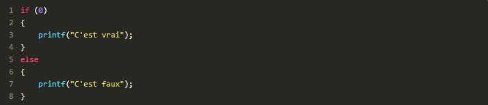Resultat:

Faites maintenant d'autres tests en remplaçant le 0 par n'importe quel autre nombre entier, comme 4, 15, 226, -10, -36, etc.
Qu'est-ce qu'on vous répond à chaque fois ? On vous répond : « C'est vrai ».
Résumé de nos tests : si on met un 0, le test est considéré comme faux, et si on met un 1 ou n'importe quel autre nombre, le test est vrai.
Des explications s'imposentEn fait, à chaque fois que vous faites un test dans unif, ce test renvoie la valeur 1 s'il est vrai, et 0 s'il est faux.
Par exemple :
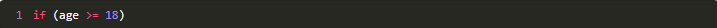Un test avec une variable
Testez maintenant un autre truc : envoyez le résultat de votre condition dans une variable, comme si c'était une opération (car pour l'ordinateur, c'est une opération !).
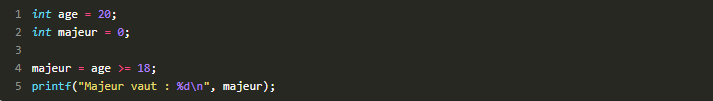Comme vous le voyez, la conditionage >= 18a renvoyé le nombre 1 car elle est vraie. Du coup, notre variablemajeurvaut 1, on vérifie d'ailleurs cela grâce à unprintfqui montre bien qu'elle a changé de valeur.
Faites le même test en mettantage == 10par exemple. Cette fois,majeurvaudra 0.
Les booléens dans les conditions
Souvent, on fera un test if sur une variable booléenne
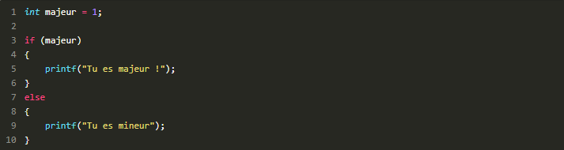Comme majeur vaut 1, la condition est vraie, donc on affiche « Tu es majeur ! ».
Ce qui est très pratique, c'est que la condition peut être lue facilement par un être humain. On voit if (majeur), ce qui peut se traduire par « si tu es majeur ». Les tests sur des booléens sont donc faciles à lire et à comprendre, pour peu que vous ayez donné des noms clairs à vos variables comme je vous ai dit de le faire dès le début.
-
La condition Switch
La condition if... else que l'on vient de voir est le type de condition le plus souvent utilisé.
En fait, il n'y a pas 36 façons de faire une condition en C. Leif... elsepermet de gérer tous les cas.
Toutefois, leif... elsepeut s'avérer quelque peu… répétitif. Prenons cet exemple :

Construire un switch
Les informaticiens détestent faire des choses répétitives, on a eu l'occasion de le vérifier plus tôt.
Alors, pour éviter d'avoir à faire des répétitions comme ça quand on teste la valeur d'une seule et même variable, ils ont inventé une autre structure que le if... else. Cette structure particulière s'appelle switch. Voici un switch basé sur l'exemple qu'on vient de voir :
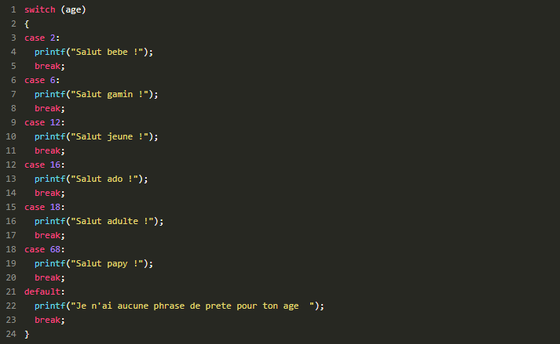